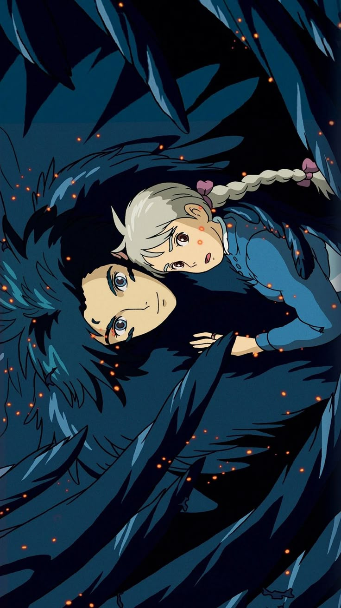
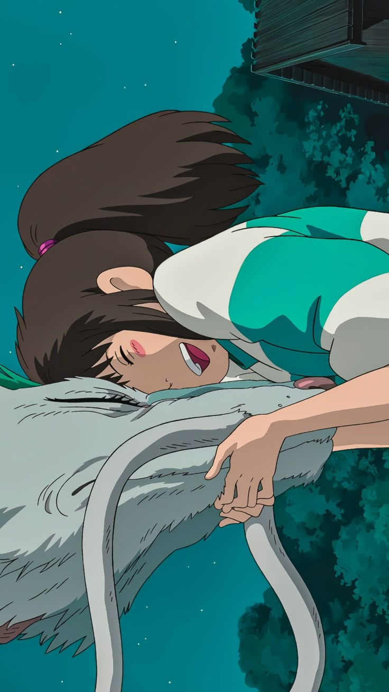
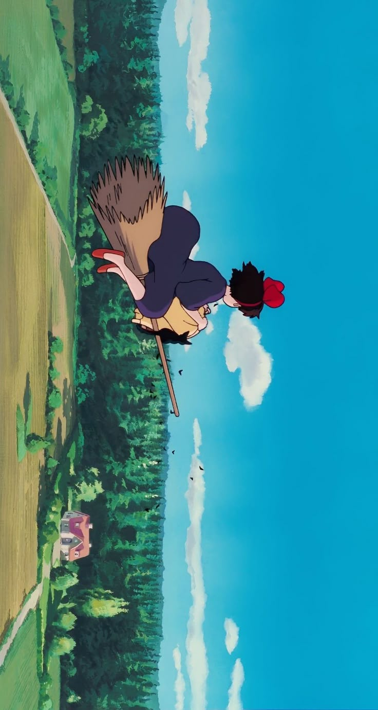
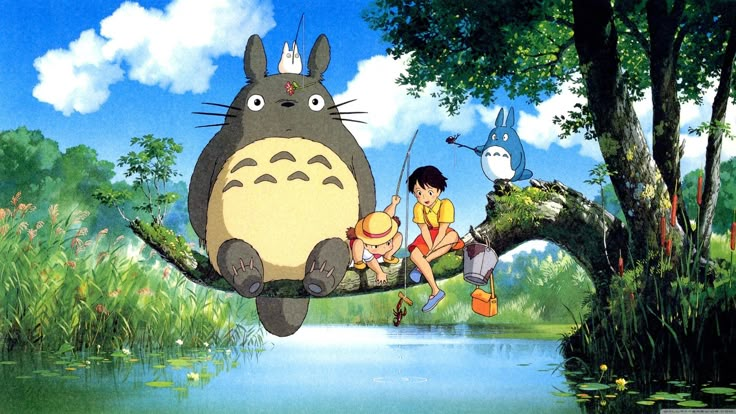
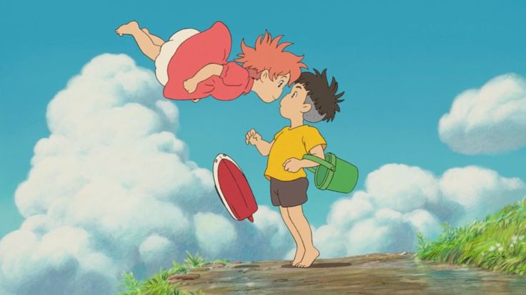

Hauru no Ugoku Shiro (ハウルの動く城, (bra: O Castelo Animado; prt: O Castelo Andante)) é um filme japonês de animação e fantasia lançado em 2004, vagamente baseado no romance Howl's Moving Castle (1986) da dramaturga britânica Diana Wynne Jones. Contou com a direção junto ao roteiro de Hayao Miyazaki e foi produzido por Toshio Suzuki. O filme é ambientado num reino fictício onde tanto a magia como a tecnologia — especificamente do século XX — predominam, enquanto ocorre uma guerra entre dois reinos. A história segue a vida da jovem Sophie (voz de Chieko Baisho) que é transformada numa idosa após uma bruxa entrar na sua loja e amaldiçoá-la. Logo após, ela embarca em uma grande aventura com o mago Howl (voz de Takuya Kimura).
Enredo
Sophie, uma chapeleira encontra por acaso o desconhecido mago Howl. Ao vê-los juntos, a jovem é amaldiçoada pela Bruxa do Deserto — apesar de que o encontro dos dois tenha sido breve —, tal maldição consiste na alteração de sua aparência: de juvenil a uma fisionomia octogenária. Seguidamente, Sophie busca por uma solução para findar tal feitiço e acaba por conhecer um espantalho vivo, o qual chama de Cabeça de Nabo. Ele a leva ao castelo em movimento de Howl, onde entra sem permissão e assim conhece os aprendizes Markl e Calcifer, a fonte da magia do castelo. Ela é apresentada como "uma serviçal contratada".
Nesse entretempo, a terra natal de Sophie está em guerra com o reino vizinho, da qual busca por seu príncipe desaparecido. Howl é convocado pelo rei para o conflito bélico, mas o mago demonstra covardia e hesitação; desta forma, ele ausenta-se por um curto tempo. Sophie conhece a feiticeira do rei, Suliman, e também a bruxa que amaldiçoou-a — esta última retorna a sua verdadeira identidade. Em uma tentativa de resgatar a "jovem" amaldiçoada, a maga tenta capturar Howl transformando-o em um ser monstruoso, ele então consegue fugir de tal situação.
Sophie percebe que a vida de Howl está, de alguma forma, correlacionada com a de Calcifer, e que o mago está transformando-se em um pássaro e que ele, a fim de proteger seu castelo, vai à guerra após aeronaves inimigas bombardeiam a terra natal de Sophie, que em pânico encharca Calcifer — que está com o coração de Howl —, após a Bruxa do Deserto tentar obtê-lo. Então, o castelo divide-se em dois; o que faz Sophie separar-se dos demais. Posteriormente, a bruxa decide devolver o coração de Howl e Sophie o coloca no corpo do mago, fazendo-o reviver e libertando Calcifer. A maldição de Sophie também é quebrada, embora seu cabelo ainda permaneça grisalho. Após beijar a bochecha de Cabeça de Nabo, seu feitiço é desfeito sendo revelado que este é o príncipe desaparecido de seu reino, que retorna à sua cidade natal para encerrar o conflito bélico e Suliman também decide fazer o mesmo.
Produção
O filme foi produzido digitalmente, porém os cenários junto aos personagens foram desenhados à mão e coloridos antes de serem digitalizados. Foram concluídos 1400 storyboards em 16 de janeiro de 2004, com a animação intermediária sendo concluída em 25 de junho. A tecnologia digital foi utilizada pelo Studio Ghibli para copiar partes fixas de uma cena, um processo que evita inconsistências entre várias frames, podendo criar uma impressão de artificialidade. Assim como os outros filmes do estúdio, Hauru no Ugoku Shiro foi co-produzido com outras empresas como Tokuma Shoten, Nippon Television Network, Dentsu, Buena Vista Home Entertainment, Mitsubishi e Toho.

Howl e Sophie abraçados enquanto ele está transformado.
Assista ao Trailer de O Castelo Animado (Studio Ghibli)
Trailer Oficial de O Castelo Animado (Studio Ghibli)
Tudo sobre A Viagem de Chihiro
A Viagem de Chihiro (千と千尋の神隠し, Sen to Chihiro no Kamikakushi, lit. O desaparecimento (escondida pelos espíritos) de Sen e Chihiro) é um filme japonês de animação, dos gêneros aventura e fantasia, lançado em 2001. O longa-metragem foi escrito e dirigido por Hayao Miyazaki, com as vozes de Rumi Hiiragi, Miyu Irino, Mari Natsuki, Takeshi Naito, Yasuko Sawaguchi, Tsunehiko Kamijō, Takehiko Ono e Bunta Sugawara. O longa narra as aventuras de Chihiro Ogino (Hiiragi), uma menina de dez anos que se encontra em mudança com a sua família.
Sinopse
Chihiro e seus pais são obrigados a se mudarem para outra cidade. Durante a mudança seu pai, decide tomar um atalho para economizar tempo, porém, acabam se perdendo e chegando em um edifício com um estranho túnel no centro. Ainda que Chihiro se negue a entrar, seus pais insistem em seguir túnel adentro. Do outro lado, descobrem um povoado aparentemente abandonado; a família opta em explorar o lugar e acabam encontrando um restaurante o qual decidem parar para comer. Chihiro deixa-os para continuar investigando. Quando começa a anoitecer um misterioso jovem chamado Haku aparece e ordena que Chihiro saia do lugar antes que anoiteça completamente.
Chihiro corre em busca dos pais, enquanto pouco a pouco a cidade vai ganhando vida: os postes acendem e aparecem uma variedade de espíritos. Ao chegar ao restaurante, Chihiro descobre que seus pais se tornaram enormes porcos. Aterrorizada, a jovem foge e começa a se dar conta que está ficando transparente. Haku, que aparece novamente, diz que para ela não desaparecer deve comer algo deste mundo e lhe oferece uma baga. Depois disto, leva-a secretamente a uma casa de banhos termais em que deve aceitar um trabalho antes que possa ajudá-la a escapar. Assim, com a ajuda de vários amigos que faz ao longo da história, Chihiro inicia uma grande aventura para buscar uma maneira de acabar com o feitiço que mantêm a família dela em porcos e poder continuar com sua vida livre.
Produção
A cada verão Miyazaki passava suas férias em uma cabana nas montanhas com sua família e cinco jovens amigas. A Viagem de Chihiro surgiu com a ideia de criar um filme que pudesse dedicar a estas pequenas amigas. Ele tinha feito filmes como Meu amigo Totoro e Serviço de entregas da Kiki, os quais dirigiu para meninos e adolescentes, mas nunca para meninas de dez anos. Para se inspirar, leu revistas de mangá Shōjo como Nakayoshi e Ribon, que as meninas liam na cabana. Porém, Miyazaki sentia que as obras publicadas nas revistas somente tratavam de temas subjetivos, como romances e namoros. Ao ver as jovens amigas, ele percebia que este tipo de tema contrastava com as personalidades delas, e então decidiu produzir um filme que mostrasse uma menina que pudessem ver em seu lugar.

Chihiro abrançando Haku na forma de espírito-dragão.
Assista ao Trailer de A Viagem de Chihiro (Studio Ghibli)
Trailer Oficial de A Viagem de Chihiro (Studio Ghibli)
Tudo sobre O Serviço de Entregas da Kiki
Enredo
A jovem bruxa Kiki, deixa sua família e seus amigos aos treze anos para aperfeiçoar sua bruxaria numa nova cidade como a tradição exige de todas as jovens bruxas, com o seu gato preto Jiji, que a ajuda, a menina acaba numa cidade à beira-mar. Na desconhecida e grande cidade, a menina inicialmente fica insegura, mas conhece bons amigos em uma padaria e desenvolve o interesse de abrir um negócio: um serviço de entrega, devido a sua habilidade de voar.
Com o apoio da padeira grávida e seu marido, Kiki recebe alguns pedidos de modo que ela faz amizade com muitas pessoas, entre outras, com uma senhora idosa, a quem até ajuda a fazer uma torta em um velho forno a lenha. Kiki aprende uma valiosa experiência e conhece seu primeiro amor, Tombo. Através de um severo ataque de dúvidas sobre si mesma, Kiki perde seus poderes mágicos, entretanto, nesta crise pessoal ela encontra compreensão e apoio de seus amigos, e quando Tombo fica em situação de risco de vida, Kiki salva-o e então, torna-se conhecida e amada por toda a cidade e também recupera sua autoconfiança.
Produção
Majo no Takkyūbin é uma adaptação do romance infantil homônimo escrito por Eiko Kadono. Hayao Miyazaki notou uma grande semelhança entre a protagonista (Kiki) com os jovens animadores do Studio Ghibli. Ainda na fase de pós-produção, Miyazaki ficou inteiramente ocupado com o desenvolvimento de Tonari no Totoro e Isao Takahata, cofundador do estúdio, com a animação Hotaru no Haka. Inicialmente, o projeto foi atribuído a dois novos funcionários do estúdio: Sunao Katabuchi, que já havia colaborado com Miyazaki em Meitantei Hōmuzu, sendo designado como diretor, e Nobuyuki Isshiki como roteirista. Entretanto, Miyazaki não ficou satisfeito com o primeiro script produzido por Isshiki, decidindo assumir de vez o roteiro da obra. A situação financeira da companhia também explica o crescente envolvimento de Miyazaki no longa-metragem.

Kiki e seu gato Jiji voando no céu em uma vassoura enquanto avistam uma casa.
Assista ao Trailer de O Serviço de Entregas da Kiki (Studio Ghibli)
Trailer Oficial de O Serviço de Entregas da Kiki (Studio Ghibli)
Tudo sobre Meu Amigo Totoro
Tonari no Totoro (bra: Meu Amigo Totoro; prt: O Meu Vizinho Totoro / Totoro) é um filme de animação japonês de 1988, dos gêneros fantasia, drama e aventura, dirigido e roteirizado por Hayao Miyazaki para a Studio Ghibli.
O filme conta a história das duas jovens filhas (Satsuki e Mei) de um professor e suas aventuras com espíritos da floresta amigáveis no Japão rural pós-segunda guerra mundial.
Sinopse
As irmãs Mei e Satsuke mudam-se para uma nova casa e descobrem que uma floresta nas proximidades é habitada por criaturas chamadas totoros. Elas acabam se tornando amigas do mais velho deles, e ficam boa parte do tempo com ele, pois a mãe delas está num hospital e o pai sai para dar aulas. Ao mesmo tempo que mostra a elas algumas verdades da vida, o totoro lhes mostra um mundo fantástico.

Totoro, Satsuki, Mei, Chuu Totoro e Chibi Totoro pescando enquanto estão sentados em um galho de árvore acima de um rio
Assista ao Trailer de Meu Amigo Totoro (Studio Ghibli)
Trailer Oficial de Meu Amigo Totoro (Studio Ghibli)
Tudo sobre Ponyo: Uma Amizade que Veio do Mar
Gake no Ue no Ponyo (崖の上のポニョ) é um filme de animação japonês que começou a ser escrito pelo famoso Hayao Miyazaki e produzido pelo Studio Ghibli em 2006.[1] A data de estreia no Japão foi 19 de julho de 2008. O filme teve sua estreia em Portugal em 27 de agosto de 2009[2] e no Brasil em 2 de julho de 2010.
Enredo
O filme conta a história de Sōsuke, um garotinho de cinco anos, e Ponyo, uma princesa peixinho-dourado que deseja muito virar humana. Um dia Ponyo foge do seu lar no oceano e vai parar na encosta onde Sōsuke a encontra e promete protegê-la para sempre.
Miyazaki foi influenciado nesta história pelo conto A Pequena Sereia de H.C. Andersen, além de inspirar-se na lenda japonesa Urashima Taro. Seu filho Gorō serviu de base para a construção do personagem Sōsuke. A cidade do filme foi baseada no Setonaikai Kokuritsu Kōen um famoso parque japonês.
Recepção
O filme vem recebendo inúmeras críticas positivas, comparando-o com a obra Meu Vizinho Totoro por serem filmes com uma temática mais simples apresentando uma estética mais infantil,[6] além de trazer as já conhecidas marcas de sensibilidade e poesia do seu criador Miyazaki. O Japan Times avaliou a produção em quatro estrelas, sendo que a nota máxima é cinco. Gake no ue no Ponyo liderou as bilheterias do Japão com 91 milhões de dólares acumulados em seu primeiro mês. Em 28 de setembro o total arrecadado passou dos 134.600 milhões de dólares. Em Novembro acumulou 153 milhões de dólares, pouco menos do que Princesa Mononoke, considerando que ainda não havia ocorrido a estreia internacional oficial.
Um crítico do Times Online disse que "Ponyo é tão caótico e exuberante quanto uma história contada por uma criança hiperativa," ele deu quatro estrelas de um total de cinco. Os críticos do 65° Festival de Veneza foram bastante receptivos e fizeram ótimos elogios.

Ponyo e Sosuke com os rostos próximos enquanto Ponyo flutua no ar.
Assista ao Trailer de Ponyo: Uma Amizade que Veio do Mar (Studio Ghibli)
Trailer Oficial de Ponyo: Uma Amizade que Veio do Mar (Studio Ghibli)